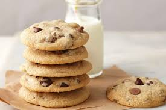

Choc Chip Cookies

Description
Delicious choc chip cookies that my daughter loves to make. This recipe is simple and has ingredients we all have at home.
It was easy for an 8 year old to follow the recipe and gave yummy results. We did think the cookies were a bit sweet so would reduce the sugar next time.
Ingredients
- 150g softened butter
- 1/2 cup brown sugar
- 1/2 cup castor sugar
- 1 egg
- 1 tsp vanilla
- 1 3/4 cups plain flour
- 1 cup choc bits (milk or dark)
Steps
- Preheat oven to 160c fan-forced. Line baking trays with baking paper.
- Using an electric mixer or whisking by hand, beat butter and sugars for 1-2 minutes or until smooth and well combined.
- Beat in egg and vanilla until combined.
- Stir in flour.
- Stir in choc bits.
- Roll into large balls and place on prepared trays 3cm apart. Press down slightly.
- Bake for 15-18 minutes until golden and cooked.
- Transfer to a wire rack to cool. Store in an airtight container for up to a week.
Home